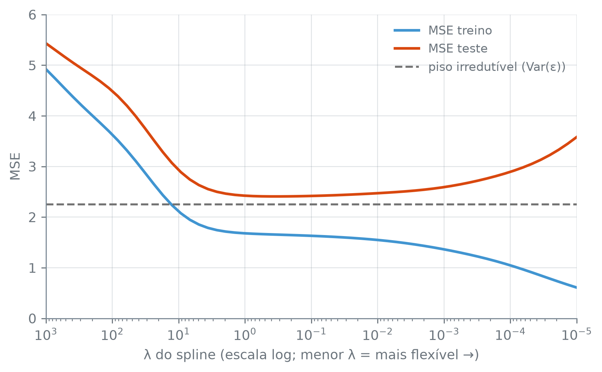

Qualidade do Ajuste e o Compromisso Viés-Variância
Autor
Douglas Braga
Nota
Esta seção corresponde às seções 2.2.1 e 2.2.2 de James et al. (2023).
Dois ajustes diferentes aos mesmos dados: qual é melhor? A resposta natural é medir quanto cada um erra e ficar com o que erra menos. Mas onde esse erro é medido decide se o número quer dizer alguma coisa.
O erro quadrático médio, e a pergunta que interessa
Na regressão, a medida mais usada é o erro quadrático médio (MSE, do inglês mean squared error). Dado um ajuste \(\hat f\) e \(n\) observações \((x_i, y_i)\), ele é a média dos quadrados das diferenças entre o observado e o previsto:
Se \(x_i\) e \(y_i\) são os mesmos pontos usados para construir \(\hat f\), esse é o MSE de treino, e ele engana. Nada impede que \(\hat f\) passe exatamente por cada ponto de treino sem ter aprendido nada sobre a relação entre \(X\) e \(Y\), só decorando as respostas que já tinha. É o overfitting, o ajuste que segue o ruído de uma amostra em vez da relação que a gerou. Um MSE de treino baixo não distingue um ajuste que aprendeu a relação de um que decorou a amostra.
A pergunta que interessa é outra: quão perto \(\hat f\) chega de um ponto que ele nunca viu? O MSE de teste, medido em observações que ficaram de fora do ajuste, responde a ela. Ele estima o erro esperado inteiro da seção 7.2, a parte redutível mais a irredutível, \(\mathrm{Var}(\varepsilon)\). Como a parte irredutível é a mesma para qualquer método, comparar o MSE de teste de dois ajustes é comparar o quanto cada um deixa de erro redutível.
Separando treino e teste: train_test_split
Para ter um conjunto de teste, basta separá-lo antes de ajustar qualquer coisa: uma fração dos dados fica reservada como teste, sem nunca entrar em ajuste nenhum, e o resto vira treino. É essa separação que permite julgar um ajuste pelo erro em dados novos.
Para ver o que a flexibilidade de um ajuste tem de real, e o que é só o ajuste seguindo o ruído, ainda falta uma peça: conhecer a própria \(f\). Com dados reais isso é impossível. Com dados simulados, gerados por uma função escolhida por quem simula, a \(f\) verdadeira é conhecida número por número.
rng.uniform(inicio, fim, size): sorteia size valores uniformes entre inicio e fim (entre 0 e 1, sem os dois primeiros argumentos). O rng e o rng.normal são os mesmos da seção 7.5.
np.sort(arr): devolve os valores de arr em ordem crescente.
train_test_split(x, y, test_size, random_state): sorteia quais observações vão para o teste e devolve, nesta ordem, os preditores de treino, os de teste, as respostas de treino e as de teste.
test_size=0.3: 30% das observações vão para o teste.
random_state=7: a semente do sorteio, para que a divisão saia sempre a mesma.
Trezentos pontos gerados por uma função conhecida, uma tendência linear somada a uma oscilação de seno, mais um ruído normal com desvio padrão ruido_padrao = 1.5. A divisão deixa 210 pontos de treino e 90 de teste. As duas sementes, a do rng e a do random_state, fixam sorteios diferentes, e as duas precisam estar fixas para a figura sair sempre igual.
ruido_padrao é o desvio padrão de \(\varepsilon\), e portanto \(\mathrm{Var}(\varepsilon) = 1{,}5^2 = 2{,}25\): o piso irredutível da seção 7.2, que aqui se conhece porque foi escolhido na simulação.
Três ajustes, três flexibilidades
Com a \(f\) verdadeira conhecida, dá para comparar ajustes de rigidez bem diferente contra ela, e não só contra os dados. O mais rígido é uma reta, com LinearRegression. Os outros dois são smoothing splines: curvas suaves ajustadas minimizando a soma dos quadrados dos resíduos mais uma penalidade sobre a curvatura, com o peso da penalidade dado por um parâmetro \(\lambda\). Quanto maior \(\lambda\), mais a curvatura é punida e mais a curva se aproxima de uma reta; quanto menor \(\lambda\), mais livre a curva fica para se dobrar atrás de cada ponto.
np.argsort(arr): as posições que põem arr em ordem crescente. x_treino[ordem] reordena o array por essas posições; a mesma ordem aplicada a y_treino mantém cada \(y\) junto do seu \(x\).
arr.reshape(-1, 1): transforma um array de uma dimensão numa tabela de uma coluna só. O LinearRegression pede os preditores nesse formato, uma coluna por preditor; o -1 quer dizer “quantas linhas forem necessárias”.
make_smoothing_spline(x, y, lam): ajusta um smoothing spline aos pontos, que precisam vir com x em ordem crescente. lam é o \(\lambda\) da penalidade. Devolve uma função: spline_moderado(x_teste) dá a previsão em cada ponto de x_teste.
Figura 1: Trezentos pontos simulados a partir de uma f conhecida (azul), divididos em treino (círculos cinza) e teste (triângulos cinza), com três ajustes de flexibilidade crescente. A reta mal acompanha a curva; o spline muito flexível se dobra atrás de cada ponto de treino, copiando também o ruído de cada um.
A reta erra 5,83 de MSE no treino e 5,28 no teste. Rígida demais para acompanhar a oscilação do seno, ela erra parecido nos dois conjuntos, porque a forma que assumiu está errada em qualquer amostra. O spline muito flexível faz o oposto: 1,05 no treino, quase decorando cada ponto, contra 2,77 no teste. O spline moderado tem o menor MSE de teste dos três (idxmin aponta para ele), com 1,66 no treino e 2,31 no teste.
A comparação da segunda saída mostra o formato: o MSE de treino só cai conforme a flexibilidade cresce (is_monotonic_decreasing é True: 5,83, 1,66, 1,05), enquanto o de teste cai e depois sobe (5,28, 2,31, 2,77). Treino sempre caindo, teste em U: a varredura a seguir mostra esse formato com muito mais que três pontos.
A curva em U, e o piso que ela não fura
Uma varredura em \(\lambda\), do mais rígido ao mais flexível, desenha a curva inteira. Só que o MSE de teste, medido sobre poucos pontos, também varia com o sorteio: com só 90 pontos, ele pode cair abaixo do piso irredutível por sorte da amostra, sem que o piso tenha sido furado de verdade. Como a simulação dá acesso a \(f\), dá para gerar um conjunto de teste muito maior, da mesma \(f\) e com o mesmo ruído.
np.logspace(a, b, n): n números igualmente espaçados em escala logarítmica, de \(10^a\) a \(10^b\). Aqui, 60 valores de \(\lambda\) de 1.000 a 0,00001.
np.argmin(arr): a posição do menor valor de arr.
np.diff(arr): a diferença entre cada elemento e o anterior. np.all(np.diff(mse_treino) <= 0) pergunta se nenhuma diferença é positiva, isto é, se o MSE de treino nunca sobe.
np.all(mascara): True se todos os elementos da máscara são True.
fig, ax = plt.subplots()ax.plot(lambdas, mse_treino, linewidth=2, label="MSE treino")ax.plot(lambdas, mse_teste, linewidth=2, label="MSE teste")ax.axhline(piso, color="0.45", linestyle="--", linewidth=1.5, label="piso irredutível (Var(ε))")ax.set_xscale("log")ax.set_xlim(lambdas.max(), lambdas.min())ax.set_xlabel("λ do spline (escala log; menor λ = mais flexível →)")ax.set_ylabel("MSE")ax.legend()plt.tight_layout()plt.show()

Figura 2: MSE de treino e de teste (este sobre os 5.000 pontos do conjunto de teste grande) contra a flexibilidade do spline (λ decrescente, escala log). O treino cai sem parar; o teste cai, toca um mínimo perto de λ=0,30 e volta a subir. A linha tracejada é Var(ε), o piso irredutível, conhecido porque o ruído foi gerado na simulação; a curva de teste nunca desce abaixo dela.
ax.axhline(y, color, linestyle): uma linha horizontal na altura y, de uma ponta à outra do gráfico; color="0.45" é um cinza.
ax.set_xscale("log"): põe o eixo horizontal em escala logarítmica. Com o set_xlim indo do maior \(\lambda\) ao menor, a flexibilidade cresce da esquerda para a direita.
Ao longo dos 60 valores de \(\lambda\), o MSE de treino nunca sobe (treino_sempre_cai é True). O de teste desce a partir do extremo rígido, toca o mínimo de 2,41 perto de \(\lambda = 0{,}30\) e volta a subir do outro lado, onde a flexibilidade passa a seguir o ruído. O mínimo fica perto do spline moderado (\(\lambda = 0{,}5\)), escolhido às cegas na comparação anterior, sem coincidir com ele. Em nenhum dos 60 pontos o MSE de teste desce abaixo de piso = 2.25 (teste_nunca_fura_piso é True). É o piso da seção 7.2, agora desenhado: nenhuma flexibilidade põe o erro esperado abaixo da parte do problema que o ajuste não controla.
A decomposição viés-variância
Por que a curva de teste tem forma de U? Imagine repetir o experimento muitas vezes: sortear um conjunto de treino novo, ajustar \(\hat f\) nele e prever num ponto novo \(x_0\), cuja resposta é \(y_0 = f(x_0) + \varepsilon\). A cada repetição, \(\hat f(x_0)\) sai um pouco diferente. A média do erro quadrático sobre todas essas repetições (sobre os conjuntos de treino possíveis e sobre o ruído de \(y_0\)) se decompõe em três parcelas:
O viés (bias) é o erro que vem de a forma escolhida ser rígida demais para a relação verdadeira: o preço que a reta paga por ser reta, mesmo com todos os dados de treino do mundo. A variância é o quanto \(\hat f(x_0)\) muda de um conjunto de treino para outro: o preço que o spline muito flexível paga por seguir de perto os pontos que calhou de receber. Um pouco de ruído a mais ou a menos nesses pontos, e a curva inteira se reacomoda. \(\mathrm{Var}(\varepsilon)\) é o piso, que nenhuma das duas outras parcelas toca.
Os três ajustes ocupam lugares diferentes nessa conta. A reta tem viés alto, porque nenhuma reta acompanha a curvatura do seno, e variância baixa, porque trocar a amostra de treino move pouco uma reta. O spline muito flexível inverte os dois: viés baixo, porque consegue seguir qualquer curvatura, e variância alta, porque essa liberdade o deixa refém do ruído da amostra. O spline moderado não zera nenhuma das duas parcelas, mas entre os três é o que tem o menor MSE de teste, que é a estimativa dessa soma.
A decomposição vale num ponto \(x_0\). O MSE de teste esperado é a média dela sobre todos os pontos do conjunto de teste. A curva desenhada acima é uma única realização disso: um conjunto de treino, um ajuste por \(\lambda\). Ela acompanha a soma viés² + variância + \(\mathrm{Var}(\varepsilon)\) sem ser exatamente essa soma, que é uma média sobre muitos conjuntos de treino. Mas o formato é o mesmo. Conforme a flexibilidade cresce, o viés cai e a variância sobe. No começo o viés cai mais depressa, e o erro de teste desce. Depois a variância passa a dominar, e ele sobe.
James, Gareth, Daniela Witten, Trevor Hastie, Robert Tibshirani, e Jonathan Taylor. 2023. An Introduction to Statistical Learning with Applications in Python. Springer.